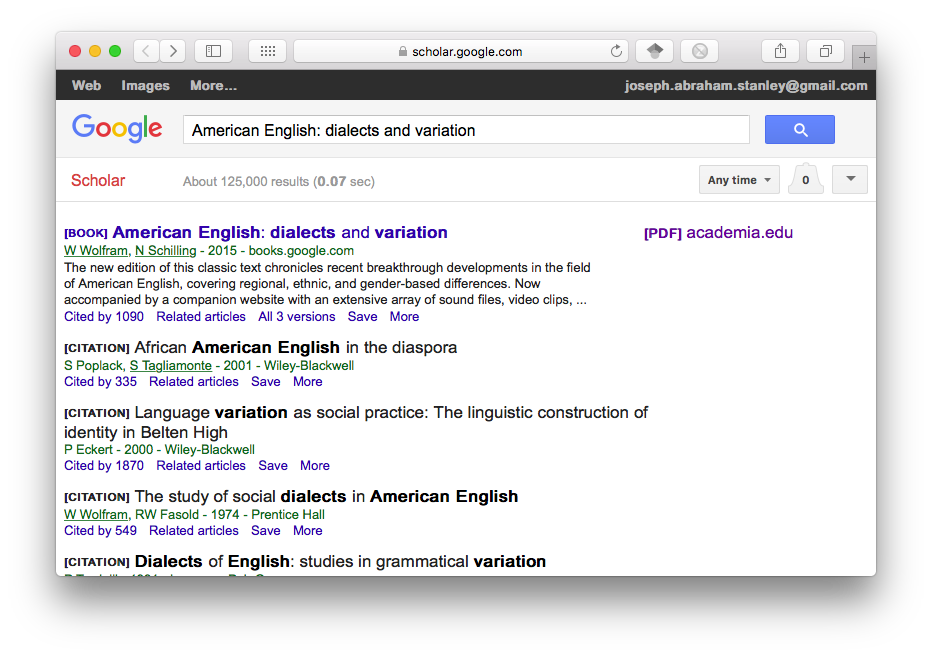
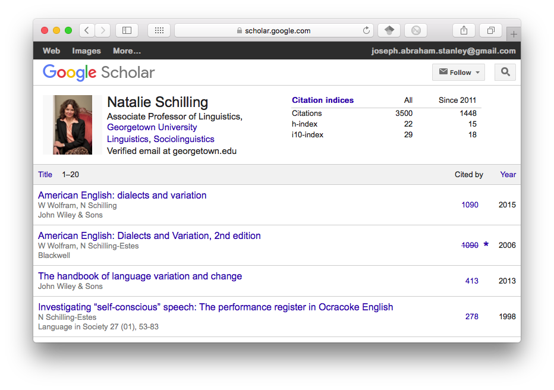

Go here to see a more recent version of this talk.
Today Emily McGinn of the Digital Humanities Lab at UGA and I did a workshop called “Brand Yourself: A professionalization workshop for grad students” [Edit: and again by invitation April 13, 2017]. We gave a presentation on different ways grad students can boost their online presence through building a personal webpage, utilizing social media, and finding your field’s conversation. We then let the attendees a chance to work on their own to create a new online profile, using what they learned.
Building a Personal Webpage
Keeping track of all these profiles can be tedious. Do you need to update seven different profiles every time you present at a conference? Is it worth it to invest the time in these sites that don’t communicate with each other? One solution is to keep your top (or only!) three or four papers on the social media sites, but include links to a central page that has your full profile. For this reason, it’s nice to have a personal webpage.
The problem with personal webpages it that they come with a cost, either in money or skills (and sometimes both). You can set up a webpage through Word Press, Wix.com, or Square Space, which take little technical skill to get a professional page set up. These can be free, but you can get some extra features for $10 a month or more. To me, that’s a pretty penny to pay for a relatively simple webpage.
Another option, which is what I did for the previous version of this website, is to host the page on Github. It’s free, but it takes a bit of skill. I’ve had to learn to use Jekyll, Markdown, and CSS, but through some help on ProgrammingHistorian.com and Lynda.com, I was able to get this site up. The benefit of going this route is I have unlimited flexibility in how the site looks, and I really, really like that.
Either way, it’s probably worth it to set up a personal domain name. For as little as $1 a month, you can buy your own domain name (like www.joeystanley.com), which looks much more professional than www.blogsplot.com/joeystanley or www.github.com/joeystanley.
Finding Your Conversation
The last thing we talked about in our workshop is to find where the big names in your field are having their online conversations. This sounds a little weird at first, but every field has some secret space where people are collaborating and sharing ideas informally as well as posting calls for papers, invitations for publications, and job openings. The problem is that where is space is is different for every field.
In some fields, these are a listserv. As far as I know, network analysis and Slavic languages each have a well-known listserv where all the conversation happens. If you’re not on that listserv, you’re out of the loop. Digital Humanities has a space on Slack where over 800 researchers get together and talk. For some fields, it might just be at coffee breaks during certain conferences. You may have to ask around established academics in your field to find that space.
One thing I will mention is that a lot of action happens on Twitter. I’ve covered this in more depth in an earlier blog post, but basically a lot of good stuff can come out of following the right people and seeing just the right tweets.
Conclusion
Overall, I thought the workshop went very well. Most of the attendees did end up setting up some sort of profile: some did an academia.edu profile, some google scholar, and a few were ambitious and set up a github page. At the very least, I got this very webpage set up as a result of preparing for this workshop, and I learned a lot about all these other pages. It was a great feeling to see a dozen students directly benefiting from our presentation.
You can download the old version slideshow we used for this presentation here.
I am indebted to the Impact Challenge blog series, with the accompanying 200+ page pdf, from which I learned a lot about all this. I would highly recommend that you download it and take a look. Not only does it include much more than what I’ve mentioned here, including step-by-step how-to guides to getting these profiles set up, but also many more topics to get yourself more visible. Thanks, Impact Challenge.
Social Media
Academia.edu is a social networking site for academics. Users can create profiles, upload their papers, and follow particular research topics. They can also follow others that have done the same. It’s a great resource for finding papers that may be behind a paywall, although it has gotten a lot of criticism for this. Papers you upload can be found by Google Scholar, which is a nice perk. The website will keep track of your analytics, and there’s nothing more thrilling than getting an email saying someone has found your profile!
The site got some criticism for offering authors the chance to promote their work for a fee. There’s also a chance at any time the site could get shut down because publishers aren’t happy about it, but with 30 million users, I don’t know if that’s going to happen any time soon.
I’m less familiar with ResearchGate, but in my cursory look, there’s a lot of overlap with academia.edu as far as its features. A big difference I noticed is that it seems like it’s more focused on creating networks based on people you cite and your co-authors while academia.edu is more focused on following your field and your interests. One thing I don’t like about ResearchGate is that the number of emails it sends you is borderline spam. It invites me to follow other grad students at my university, but, no offense to the sciences, I’m not particularly concerned with what a microbiologist on the other side of campus is doing.
I would imagine most researchers use Google Scholar regularly, but did you know you can create a profile for others to see? You can tell a researcher has done that when you see their name underlined in a search:

In this screenshot (live link here), you can see that Walt Wolfram, Natalie Schilling, Sali Tagliamonte have created their profiles, but Shanna Poplack and Penny Eckert have not. I’d like to see what else the last two researchers have written, but I can’t simply click on their names like I can with the first three. When you do click on their links, you can see the full profile including what else they have written and how many times each has been cited.

It does take a bit of work to get a full profile going, because Google’s data can be a bit messy, so you’ll have to add stuff in by hand. But I think the payoff is worth the effort.
There are a handful of other websites out there that can help you build an online presence. Impact Story is one that can keep track of how much of an impact you have on people by keeping track of when people cite, mention, read you and your work. For $10 a month, it might not be worth it for a grad student, but for a professor applying for tenure this might be.
LinkedIn is one I should mention, but I don’t find it terribly useful for academics. It might be worth it to set up a low-maintenance page that gives a good view of you in a nutshell, just in case people look.